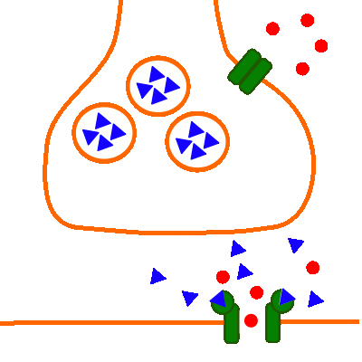

Erregungsübertragung (chemisch): An der neuromuskulären Synapse
Natriumeinstrom und Endplattenpotenzial

Abb. 1: Nur Natriumeinstrom und Endplattenpotenzial
- Präsynaptisch (oben):
Präsynaptische Membran des Axons und des daran anschließenden Axonendknotens;
Vesikel-Membran;
Spannungsabhängiger Calciumioneniumkanal (Kanalprotein);
Acetylcholin als Neurotransmitter (dreieckig, löst sich wieder von den transmitterabhängigen Natriumionenkanälen, die sich daraufhin wieder schließen);
- Postsynaptisch (unten):
Postsynaptische Membran der Muskelzelle (die sich in dem neben der Synapse anschließenden Bereich befindlichen spannungsabhängigen Natriumionenkanäle sind nicht dargestellt);
Transmitterabhängiger Natriumionenkanal (Kanalprotein) mit den Rezeptorstellen für den Neurotransmitter Acetylcholin;
Natriumionen (rund/ausgefüllt, strömen während der Depolarisationsphase ein);
Positiver Ladungsüberschuss (nicht gefüllter Kringel mit Pluszeichen);
Negativer Ladungsüberschuss (nicht gefüllter Kringel mit Minuszeichen);
- Natriumionen strömen in die Muskelzelle ein.
- Es kommt zu einer Depolarisierung, zunächst bildet sich ein Amplituden moduliertes Endplattenpotenzial.
- Im Falle einer überschwelligen Depolarisation entsteht ein Frequenz moduliertes Muskel-Aktionspotenzial,
das sich über die postsynaptische Membran der Muskelzelle hinweg wie ein normales Aktionspotenzial ausbreitet.
Die dafür notwendigen spannungsabhängigen Natriumionenkanäle, spannungsabhängigen Kaliumionenkanäle sowie die
Natrium-Kalium-Pumpe sind hier nicht dargestellt.
Externe Links
Synapse: Chemische_Synapsen